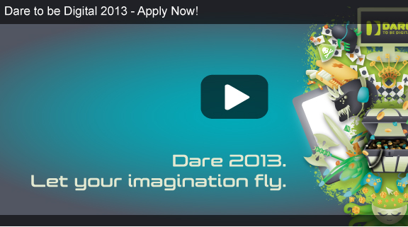

Do you like to play video games? Are you serious about designing video games? If so, you've come to the right place. Dare to be Digital is the premier video games development competition for University students and recent graduates. Dare to be Digital Nordic is where you will find all the information you need to apply and compete in the Nordic subsection of the Dare to be Digital competition.

News
The Finnish and Scottish team behind Starcrossed, one of the Dare to be Digital winning games from 2012, won a BAFTA Ones to Watch Award last night at the British Academy Games Awards. Andrew MacLean said last night: "Winning the BAFTA hasn't really sunk in yet. Honestly, words cannot describe the feeling. When I was standing on stage, I thought I was going to fall, my legs were shaking so much.
BAFTA-winning student game Tick Tock Toys is already a global hit for its creators - receiving promotional features on Apple's App Store in 40 countries worldwide. Sophia George, co-founder of Swallowtail Games, said: "We're absolutely delighted to be promoted on Apple's App Store for our first game, Tick Tock Toys. It's such an incredible endorsement after winning Dare to be Digital in 2011 and the BAFTA Ones to Watch Award in 2012.
Dare to be Digital, the world’s leading computer game design competition for students, is open for entries – a unique opportunity for aspiring professionals to win their very own BAFTA. Run by the University of Abertay Dundee, Dare to be Digital sees hundreds of students every year competing to become one of 15 teams to build a working game prototype in just nine weeks. The games then go on show to the public and to industry experts in Dundee in August, with three winning teams picked to compete for the BAFTA ‘Ones to Watch’ award..
Students or graduates from the Nordic countries will compete against each other in a Nordic subsection of the competition. Teams need to include a video pitch of the game concept when they are applying to the Nordic competition. The videos will be judged online and if you’re team get selected to attend the interview day, this will take place at NITH in Oslo, Norway.
The winner of the Nordic competition will be announced at the winning ceremonies, which will be hosted may 15. at NITH in Oslo, Norway. So, what is the price for the Nordic winner of the competition? The Nordic winner will get all travel expenses covered and weekly salary throughout all of the 9 weeks, while they are developing the game in Dundee, Scotland.
Key Dates
| Application deadline | 9 Apr |
| Online judging | 15 Apr |
| Interviews | 29 Apr - 9 May |
| Announcing Nordic winner at NITH | 15 May |
| Competition Dates | 10 Jun - 11 Aug |
| Dare ProtoPlay | 8 - 11 Aug |